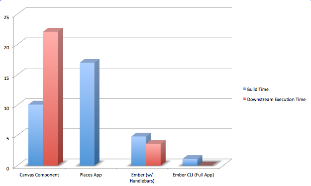

Classmates.com
Classmates.com
github.com/classmates/Ember-Meetup-20141105
In the Beginning
3-week sprint
Complex inter-dependency
2-day release cycle
culminated in 4-hour, "after-hours" deploy & validation
Apache Tiles and POM for dependency management plus Maven for releases
So, why change?

From Back to Front
Java/JSTL development was slow
Dependency tree was unmappable
Developer
blueprint
was not available
Defining Success
Small, collaborative team
No negative impact on customer interface
Predictable outcome from distribution of work (read:
The Ember Way
)
Increased Product Velocity
Decreased Team-Dependency-Roadblock
Full Continuous Integration (all the way to prod!)
Developer Success
Upgrade path
Community Involvement
Product (planning) Contribution / Ownership
A Foundation of Frameworks
Drop 960, Pick up Bootstrap
Drop "Canvas", Pick up Ember
Drop Maven in favor of Bamboo and Gradle
Rocky Road
Started with Ember 0.8
Ember Data from the start (for better or worse)
Initially built custom adapter to use websockets
Lots of caching issues
Trying to grow with changes to Ember
Our Stack
Apache
Tomcat
Node.js => Java API
Ember.js
Require.js
Code Organization
Require.js for module management
Organized by app (plus core app)
Built into vendor and main modules
Feature Requirements
Ad support
Lottery A/B testing
Feature Flags
Custom CMS content support
Node in the Middle
Node.js service layer to consolidate communication with Java API
Using
Socket.io
,
Sock.js
,
Engine.io
,
Express.js
for communication with client
One call for many data points
Manages authentication requests
Uses RSVP.js to manage async requests to Java API
Started with Sockets
Initially started with Socket.io
Managed session counterpart on server
Lightweight, FAST, shiny
Set groundwork for realtime
Resiliant, auto-reconnection mechanism
Socket Issues Galore
Sticky loadbalancers, not so sticky
Many issues with clients on older browsers
Custom adapter was buggy at times
Changed from Socket.io to Sock.js to Engine.io, with little improvement
Express Yourself
Rewrote Node server as an Express.js API
Ported data enpoint resources to Express.js over a week
Switched to RESTAdapter
Had to come up with a new auth scheme (now per request)
Added support to sideload records, reusing endpoint resources
Onward and Upward
Started the move to Ember-CLI mid September
Building first app on CLI, then porting existing apps over
All future development will be with CLI
Staying on latest and greatest Ember and Ember Data when we can
Moving to pods, in hopes of future lazy loading of routes
Learning from our Mistakes
Taking advantage of initializers, (currentUser, analytics, etc) and using services as often as possible.
Using Ember Data in more intelligent ways
Refactoring some controller interfaces into services
Demo